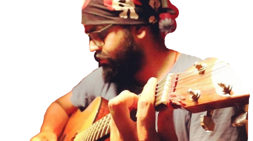
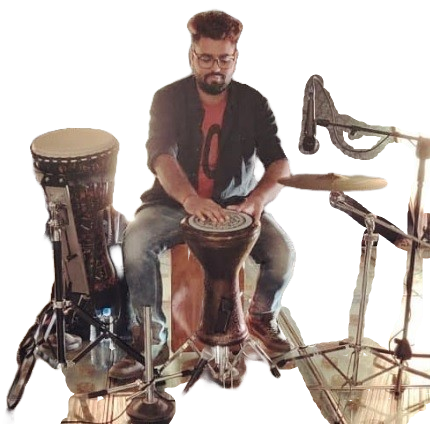
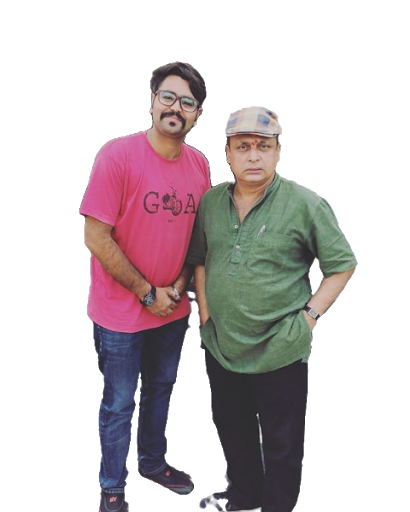
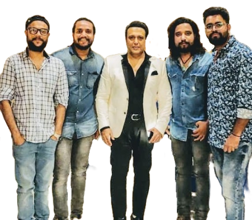

RHYTHM TO BEAT, populalry known as #RTB among the locals and dear ones is a studios that was founded on 5th September, 2017 by Rahul Sharma to let the Jodhpurites experience a place that can provide them an experience of peace with the source of music. #RTB works as an "Auudio Visual" studio which aims to let the musicians from variant fields and interests create, and record music of different generes. Also, it is open to students who want to learn musical intruments like guitar, drums, etc. by the best faculties in the town. The studio also provides the services of personalized audio-visual recording for various purposes.
Founder of the studio, RAHUL SHARMA is one of the most talented musicians of the city who excels in various music generes! Being a pro level player of guitar and various other pecussion instruments, our founder offers guitar classes and percussion intrument's classes at the studio. He has set a benchmark in the field of music in the city of Jodhpur by offering to the citizens a place where they can PRACTICE, LEARN, EXPLORE, and CREATE MUSIC!


Sir Rahul Sharma is known to have expertise in various percussion instruments, drums being on the top! He has proven to be a vibrant musician by trying his abilities in almost all type of percussion instruments like derbuka, cajon, djemble, etc. Beliving in sharing all the knowledge that he has acquired in these years, he has set up Rhythm To Beat with utmost love and aims to offer various services to all the music lovers!

Sir has also earned a good name by being an intergral part of SAAZ, THE BAND and have got great opportunities to perform for some great personalities from the bollywood. Being an expert in teaching various generes of music, Sir Rahul Sharma promises to provide the best of all services offered at RHYTHM TO BEAT!
